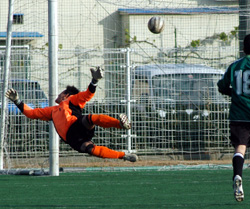
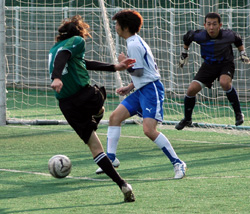

|
Hachioji Park, Saturday 15th December,
Having not won a league game since August and picking up only 2 points out of the last 24 available it becomes increasingly difficult to put a positive spin on things, however, with the exception of the debacle against Sala, performances have been decent in spite of results. Losing to Hibs is, of course, nothing to be ashamed of, as they are a very good side with some outstanding wide men. Indeed, the Jets can probably take some comfort from the manner of the defeat: one-nil up at half-time despite being under almost constant pressure, and still in front after 20 second half minutes of what was now a pummeling. To be brutally honest it would have been a travesty if Saitama had walked away with any points from this one, hard work and intense commitment cannot hold pace, skill and technique at bay for 80 TML minutes!
The Jets re-jigged their formation following advice from Niigata and Saitama legend ‘The Rottweiler’. Despite relocating his ‘man on a donkey’ act to Wankchester (northern England, always raining, prawn sandwiches) ‘the dragon elbow’ still exerts an influence on tactics and selection, if not opposition shins. Osawa was moved out of the middle to right-back and along with Hayashi, his counterpart on the left, did a sterling job of neutralizing the dangerous Hibs wingers. Resistance wouldn’t have lasted as long as it did without such performances. Hembise came in to partner Rayner in the centre of defence and along with Harada, E., replacing his brother, K., between the sticks, they performed exceptionally well in the first half. A five man midfield was deployed, leaving Gildart to plow a lone furrow up front.
Despite having most of the ball Hibs created little of note in the opening 40 minutes, Harada saving at the feet of a striker was as dicey as it got for the Jets. Forced to play on the break Saitama created a couple of opportunities, first Yoshiba was found by a good long ball over the head of the last defender but was slow to react and the chance was gone. Next the ‘keeper had to be alert to save at the feet of Sasaki. The warning signs were there and so perhaps it should have been no surprise when Gildart got himself one-on-one with his marker, beat him for pace on the outside and crashed a powerful shot into the net from 15 yards, the Hibs’ keeper a mere paper screen in the face of the Canadian’s bullet. 1-0 Jets at half time.

In the second half the Hibs really turned the screw. Possession and pressure were constant and it seemed only a matter of time before the Jets’ brave but limited resistance was broken. The woodwork took a battering from 3 yards when it seemed much easier to score, Harada made a sensational save from a header inside the 6 yard box that drew gasps of astonishment from those on the sidelines. How long could this go on for? If it was a boxing match the ref’ would have stopped it, surely. The ball was spending too much time in the Jets’ penalty area and eventually a green and black shirt smashed it home from 5 yards. 1-1. Hibs kept coming and soon after a cleared free kick was returned with interest from 18 yards to make it 2-1. Now losing, just defending wasn’t an option and the Jets poured forward searching for an unlikely point in the last 10 minutes. Predictably Hibs scored twice on the break in the final two minutes to put a degree of realism on the score line. Final score: 4-1.
Somehow Saitama are in an even worse position than this stage last season and this time there is no Jetro, so there are two relegation places available! It shows the gulf between TML1 and 2 that Jetro, who had a nightmare last season, are now top in TML2. With Celts and Geckoes much improved from last year, and YCAC still being able to beat the champions despite a poor run of form, it’s looking like a three-way battle for survival in TML1. May the 8th best team win!
Report by Rob Keating
|